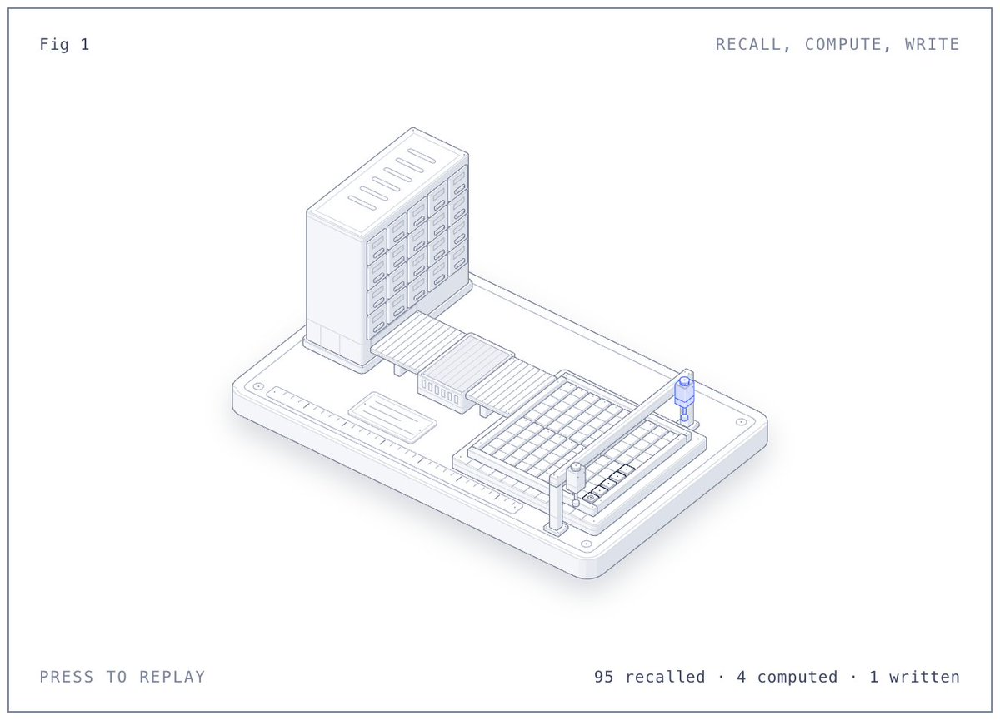
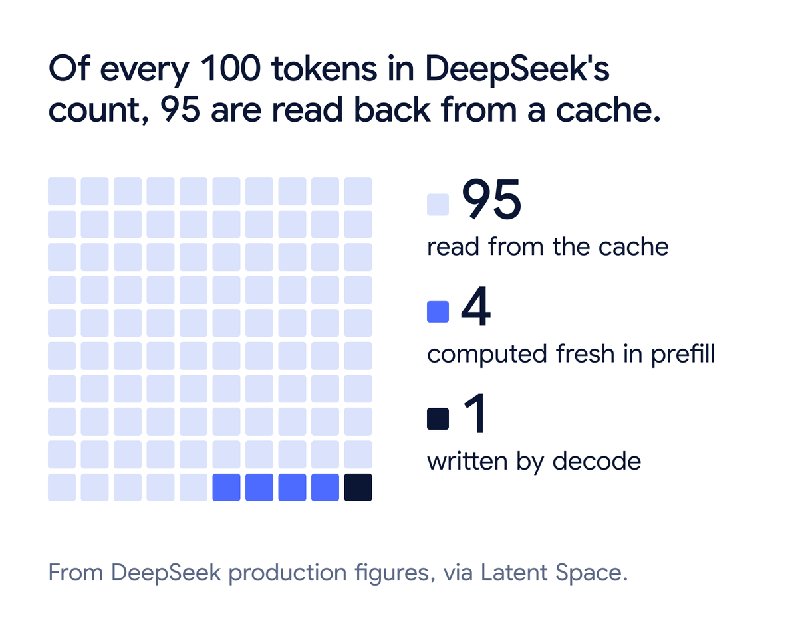
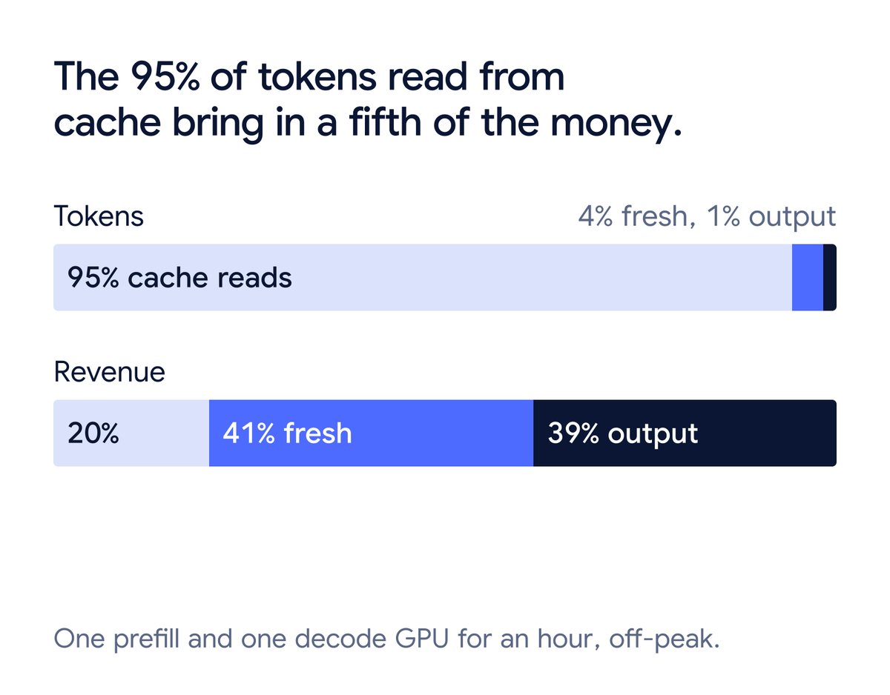
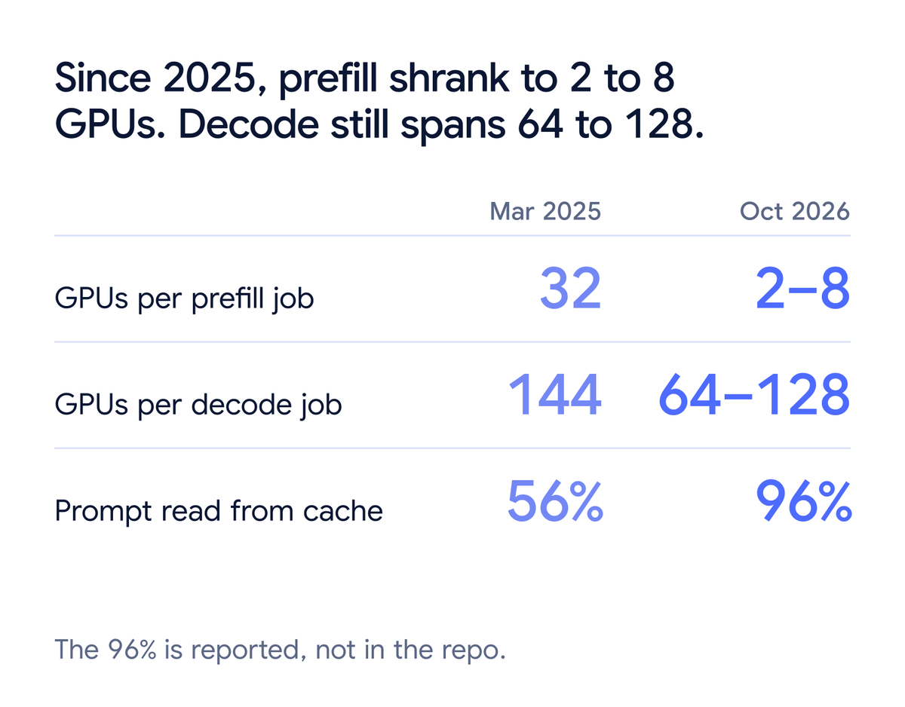
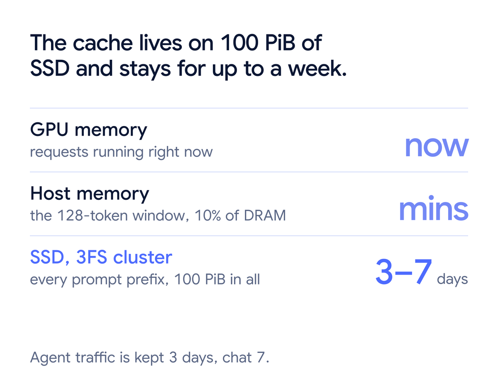
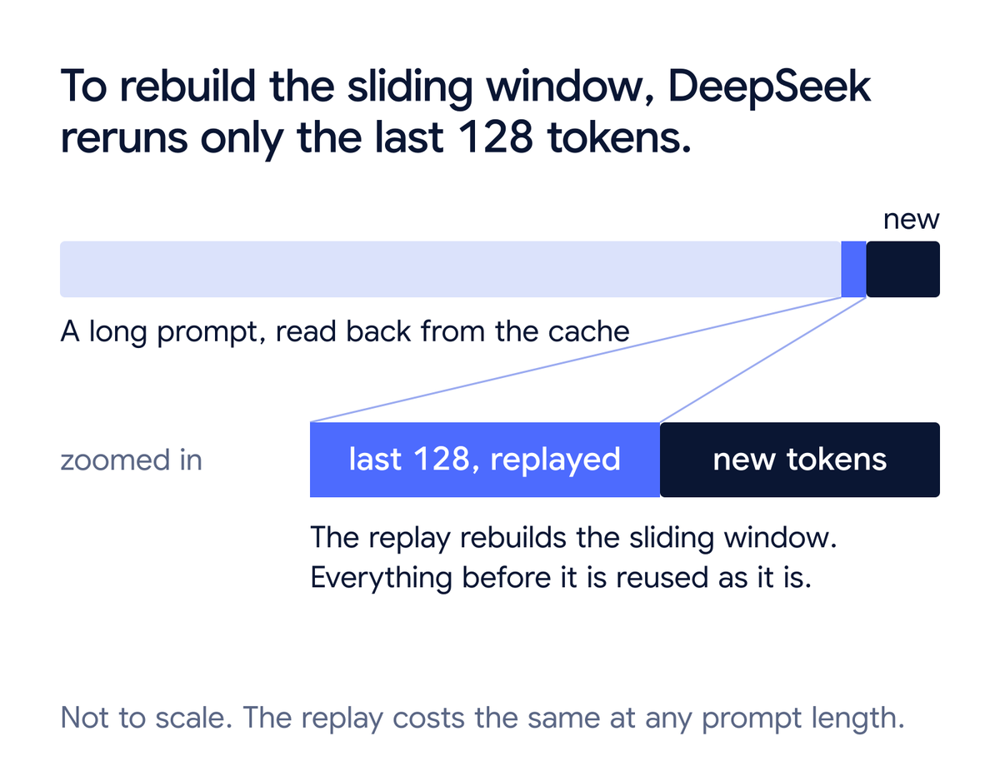
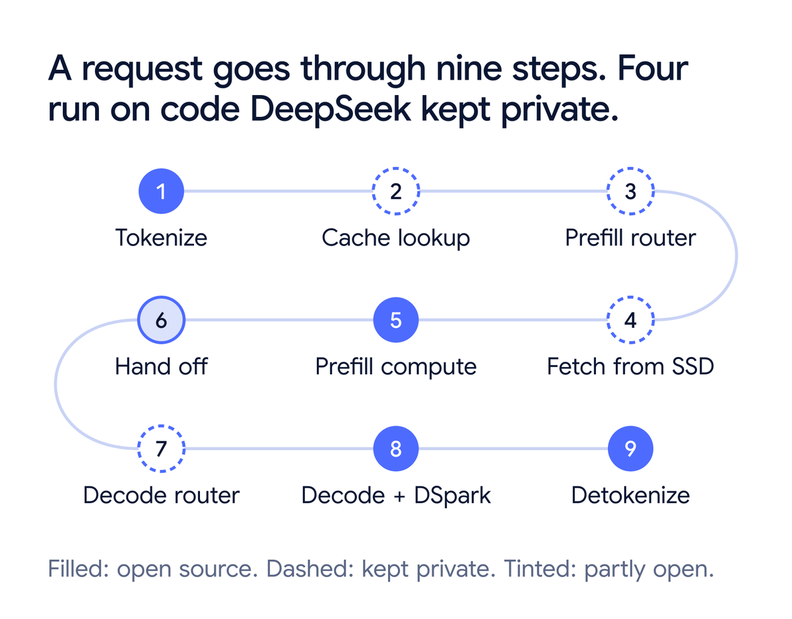
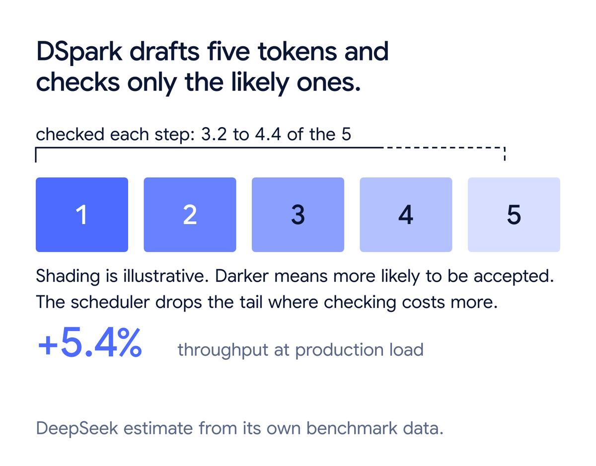
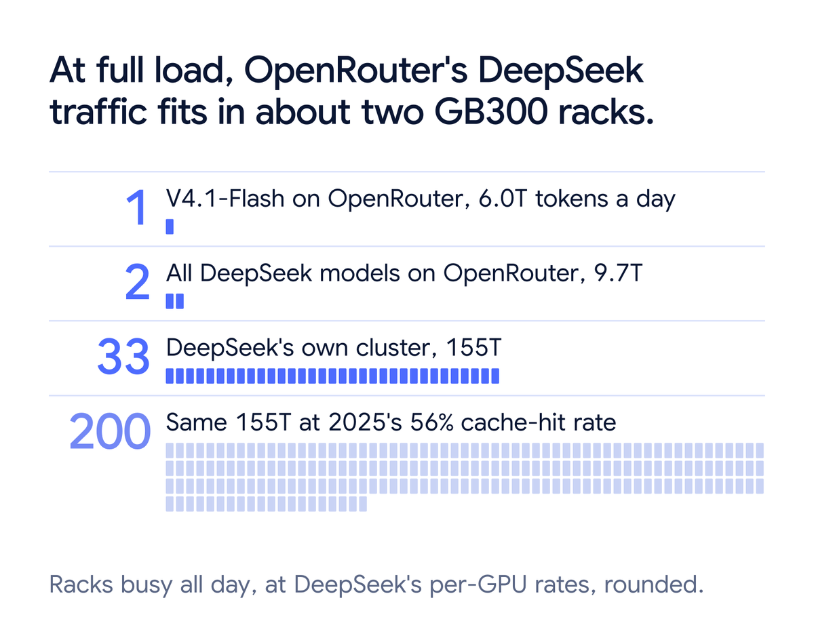
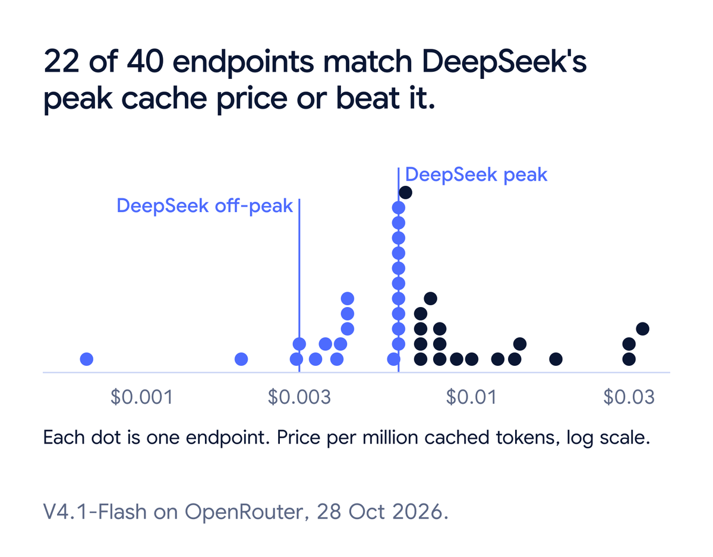

dax发帖称，一个GB300机架能扛起OpenRouter上几乎全部DeepSeek流量一天。追踪数据显示，OpenRouter上DeepSeek V4.1-Flash模型每天约6万亿token；GB300 NVL72机架有72块GPU，6万亿token分摊到86400秒和72块GPU，每块GPU每秒要处理约965000个token。
没有GPU写得这么快。GB300里的Blackwell GPU跑这个模型每秒约写14000个token。两个数字差70倍，因为965000个token里绝大多数从缓存加载而非重算。DeepSeek 10月20日开源的推理引擎DeepInfer，正是围绕让缓存转起来设计的。下文先拆解它的工作方式，再用数字验算dax的估计。
模型读提示词时建KV缓存：每个token对应一组值，供后续token回看。建缓存意味着每个token都要跑遍模型全部层；建好后可以存下来反复加载。
复用有一个限制：每个token的值取决于它之前的所有token，存下来的缓存只对完全相同的前缀有效。提示词开头附近改一个词，后面的内容全部要重算；在末尾追加消息，之前的内容都可以加载。
聊天应用与Agent走第二种方式：每轮都把整个对话重发一遍，末尾加新内容。发起20次工具调用的Agent，会把完整历史发20次。真实流量里的大多数输入token，都是服务器已经见过的前缀。
于是token分三种：缓存输入从存储加载。V4.1-Flash的主缓存每个token占890字节，10万token的对话约89MB，从磁盘读；新输入要跑遍模型全部层，叫预填充；输出逐个token写，每个都是一次完整模型前向，叫解码。

DeepSeek生产数字显示，输入token的缓存命中率达96%。每块预填充GPU每秒处理150万输入token，其中6万是新的、144万是加载的；每块解码GPU每秒写14000个token。每100个token里，95个加载、4个计算、1个写出。

DeepSeek非高峰价格反映工作量差异：缓存token每百万0.003美元，新输入token每百万0.15美元，输出token每百万0.60美元。缓存token比新token便宜50倍，因为服务它只是磁盘读取而非跑一遍模型。对照价格可以验算上报数字：一块预填充GPU加一块解码GPU一小时合计处理51.8亿缓存token、2.16亿新输入token和5040万输出token，非高峰价合计15.55加32.40加30.24等于78.19美元，即每GPU小时39美元；DeepSeek自己公布的数字是38美元。

预填充与解码用GPU的方式相反。预填充一次读几千个新token，GPU时间花在计算上，少量GPU就能跟上。DeepSeek在普通8卡服务器上跑预填充。
解码每步每个请求只产一个token，每步都要把模型权重从显存读出来。每个token的计算量很小，瓶颈是显存读取速度。让解码高效的办法是批处理：同一步跑很多请求，一次权重读取为每个请求各产一个token。
V4.1-Flash是混合专家模型：每层384个专家，每个token只用其中6个。8块GPU上，每块GPU放48个专家，大批量下每步几乎要读遍全部专家；把同一模型摊到64块GPU上，每块GPU放6个专家加一个繁忙专家的备用副本，每步读的权重数据少得多，同样时间内能跑大得多的批量。
代价是通信：每层上每个token都要发到持有对应专家的GPU，再把结果发回来。只有64块GPU之间有极高速互联时才行得通。NVIDIA的NVLink把一台机器或一个机架内的GPU连起来，速度远高于普通网络。GB300 NVL72把72块GPU放在同一个NVLink域里，刚好够一个64卡解码组。这就是DeepSeek在64到128卡的组上跑解码、预填充放在更小的独立机器上的原因。

缓存只有在用户回来时还在才有用。Agent通常几秒内回来，人隔几小时甚至几天才重开对话。DeepSeek把Agent缓存留3天、聊天缓存留7天，因为少数旧对话会被反复重开很多次。
这么多缓存塞不进显存：DeepSeek每块GPU对应约14.4TB缓存，GB300单卡显存约288GB，少50倍。主缓存放在独立存储集群里，约100 PiB SSD，跑DeepSeek自研的3FS文件系统。存储共享后，任何预填充服务器都能加载任何对话，路由器可以把请求发给最空闲的服务器，而不必发回上次见过它的那台。

请求到达时，前端服务按128个token分块对提示词做哈希，找出已存的最长前缀。匹配的块从SSD进主机内存，再逐层进GPU显存，同时GPU计算前面的层。
还有第二块更小的缓存：V4.1-Flash多数层除了完整历史，还会密切关注最后128个token的滑动窗口。DeepSeek把窗口状态放在生成它的服务器内存里，不放SSD。副本丢失时，DeepSeek不精确重建窗口，只重跑最后128个token并接受近似结果，而且训练时就用这类近似训练过模型，对输出的影响可以忽略。代价与对话是1000 token还是100万token无关。

拼起来看，一次请求走九步：

解码时DeepInfer还用草稿模型：小模型DSpark猜接下来5个token，主模型一步校验全部5个。解码受显存读取限制，GPU计算有富余，校验5个token与写1个的代价差不多。猜中3个，请求一步就拿到3个token。生产负载下批量已经很大，富余计算变少，DeepSeek估计收益约5%。

开源推理引擎vLLM在单个GB300 NVL72上跑同样的预填充加解码配置，测得每块GPU每秒954000个token（含缓存token），整个机架每天59亿token，接近OpenRouter上V4.1-Flash的6万亿。按这个实测，dax的估计成立：一架机架全天运转。DeepSeek自己的单卡数字稍低，给出1.3架。OpenRouter上全部DeepSeek模型每天约97亿token，合1.6到2.1架。DeepSeek自己的集群每天155万亿token，按vLLM数字合26架，按DeepSeek数字合33架。

这些计数假设机架24小时全满。真实流量有高峰，DeepSeek在工作日01:00到04:00和06:00到10:00（UTC）收双倍价，把工作推出高峰。机队要按高峰定规模，实际需要的机架比日均值算出来的多。
计数还高度依赖缓存命中率。2025年3月DeepSeek为更老的V3模型发布过同类概览，命中率56%。56%时预填充要算44%的输入token而非4%，预填充工作量是11倍；解码工作量不变，因为模型写出的答案一样多。预填充GPU变成11倍、解码GPU不变，155万亿token就需要约200架而非33架。
所以一架只能算OpenRouter流量的下限。OpenRouter把DeepSeek流量分给几十家供应商，每家有自己的缓存；对话落到与上一轮不同的供应商时，缓存全无，必须从头算。除非每家供应商的命中率都达到DeepSeek的水平，真实数字只会更高。
开源范围覆盖引擎：跑模型的GPU代码、预填充与解码、DSpark、滑动窗口重放、调度器与deepseek-recipe。DeepSeek留下了共享缓存库与两个负载均衡器，也就是上文九步里的第2、3、4、7步。README称它们与DeepSeek内部基础设施绑定。
vLLM报告解码性能在DeepSeek数字的6%以内，另一开源引擎SGLang报告在GB300上持平或略快。缓存价格也跟上了：OpenRouter上40个标出V4.1-Flash缓存价的端点里，22个收费每百万0.006美元或更低，也就是DeepSeek的高峰价。

价格只是供应商命中时收的价。命中频率取决于有没有一块所有服务器都能读、留存几天的统一缓存，而这正是DeepSeek没有开源的部分。相关说明称这部分代码尚未完全开源。
参考：https://x.com/i/article/2115393307752751104